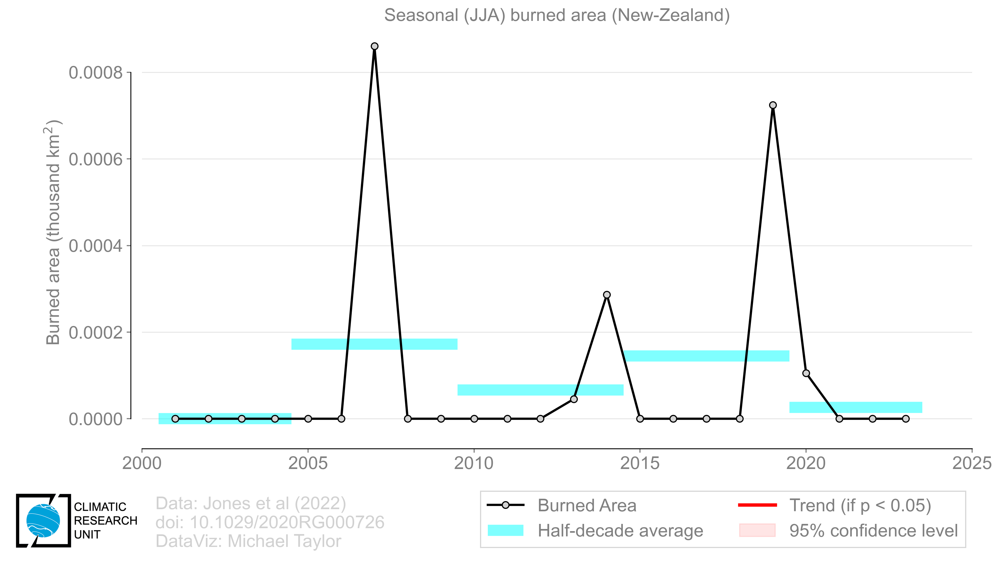
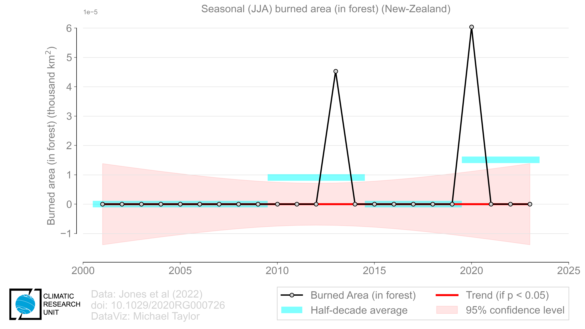
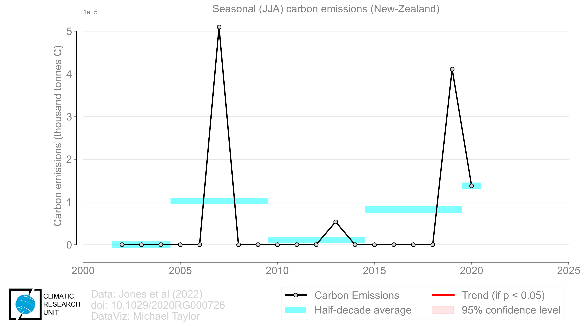
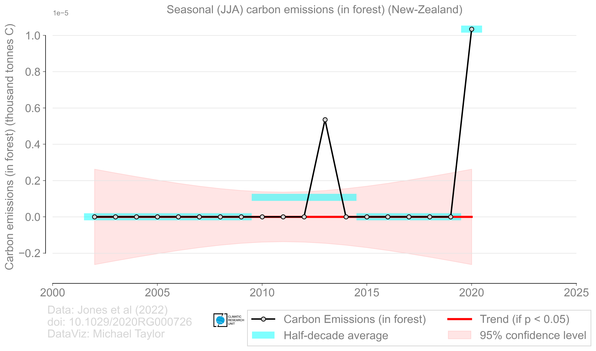

Includes fires detected by the MODIS burned area product with 500m resolution
(MCD64A1c6.1; Giglio et al., 2018)

Forests are any areas with tree cover over 30%, based on the MODIS vegetation continuous field product with 250m
(MCD12Q1c6.0; Giglio et al., 2018)

Emissions from all fires based on the 500m GFED product driven by MCD64A1c6.1
(van Wees et al., 2023)

Emissions from forest fires based on the 500m GFED product driven by MCD64A1c6.1
(van Wees et al., 2023)
Set the timescale using the radio buttons. Selecting an IPCC AR6 region will take you to a page showing the timeseries of all variables processed.
The raw data is at 0.25 degrees resolution. The IPCC AR6 land region mask is used to compute aggregated totals at the monthly, yearly (JAN-DEC), yearly (JUL-JUN), seasonal (DJF), seasonal (DJF), seasonal (MAM), and seasonal (SON) timescales. The IPCC AR6 land regions abbreviations have the following meaning:
The total area burned by fires in the region in units of thousands of km².
The total burned area by forest fire in the region from gridcells having 30% tree cover in units of thousands of km².
The total carbon emissions from all fires in the region in units of thousands of tonnes of C.
The total carbon emissions from forest fires in the region from gridcells having 30% tree cover in units of thousands of tonnes of C.
The underlying data for each plot is in CSV format.
The timeseries are fit with a robust OLS regression (Theil-Sen) and a regression t-test is performed to determine if the OLS slope is significant at the 95% confidence level (p < 0.05, alpha = 0.05). This is only shown when the alternative hypothesis is true. The uncertainty band for the 95% confidence interval on the slope and intercept is provided. For each timescale (with the exception of the monthly data), 5-yr means are shaded as a visual guide to help understand the variability and potential trend in the data.
Page created on 2023-11-28 by Michael Taylor (CRU/UEA) for the UEA PVC impact study project with Matt Jones and Tim Osborn.